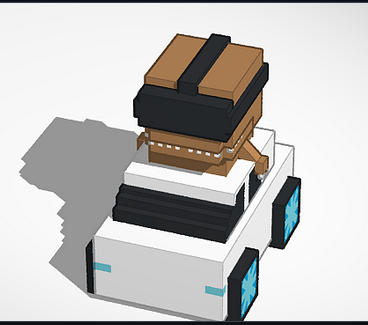
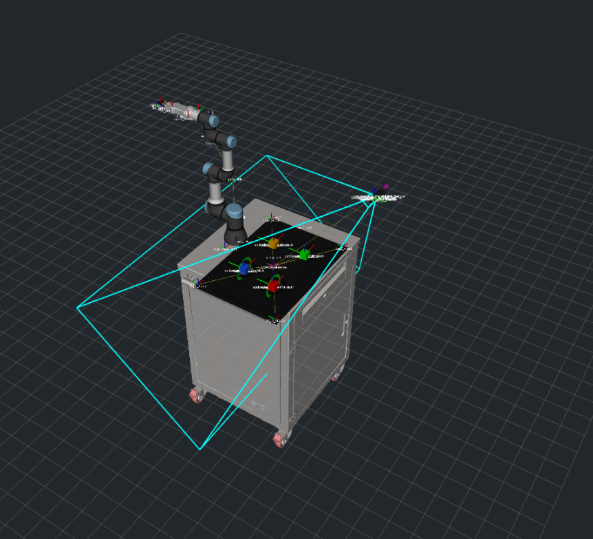

Mixed-reality robot control platform
HoloAssist integrates a Meta Quest 3 headset with a UR3e collaborative robot for real-time teleoperation, autonomous pick-and-place, and spatial AR visualisation powered by AprilTag cube detection.
Open-source XR teleoperation for collaborative robots — ROS 2 Humble + Unity + Meta Quest 3
HoloAssist bridges Extended Reality (XR) and collaborative robotics by connecting a Meta Quest 3 headset to a UR3e robot arm over ROS 2. Operators teleop the robot in real time using XR controllers, see live cube positions and the robot's planning scene as AR holograms, and trigger autonomous pick-and-place with a single service call.
The goal is to ship a production-ready Unity + ROS 2 package that fills a clear niche: there is no off-the-shelf XR teleop solution for collaborative robots combining spatial AR awareness with low-latency joint control. HoloAssist aims to be that package — open-source, hardware-agnostic, and deployable on any ROS 2 Humble system.
Design: Portal series — Aperture orange, test-chamber grid, terminal green on black.
Built at the University of Technology Sydney — for developers, researchers, and anyone who cares about safer human–robot collaboration.
If you are building XR interfaces for collaborative robots, there is no off-the-shelf package that combines low-latency joint teleop with spatial AR. HoloAssist is our attempt to build and open-source that stack — ROS 2 Humble, Unity, and Meta Quest out of the box.
Teleoperation with spatial AR awareness changes what is possible in hazardous settings — remote handling, precision industrial tasks, and environments where keeping humans at a safe distance matters. XR gives operators situational awareness that a flat screen cannot.
The pace of robotics development — humanoid robots, quadrupeds, dexterous manipulation — coming out of China and labs worldwide is extraordinary. We are a small academic team at UTS trying to contribute something real to that wave: open-source XR teleoperation that anyone can deploy on their own robot.
Drop images / GIFs into screenshots/ and uncomment the img tags.


